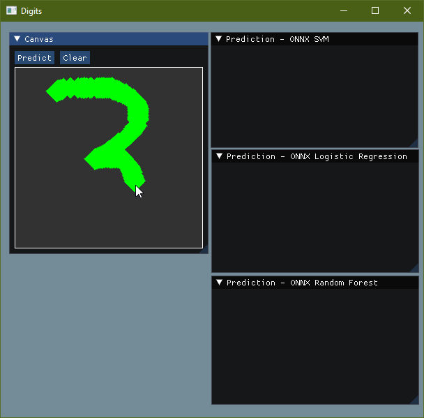

According to scikit-learn documentation one can save a trained scikit-learn model onto disk in either ONNX format or PMMML format. The saved model can be then easily loaded back in to python for inference. But how can one use such a saved model in a C++ application. In the case of ONNX one could use ONNX runtime. Though loading models saved in PMML format have good support in Java. There aren't any good libraries in C++ that can load a PMML model.
I created a toy application to show how one can use ONNX runtime to do scikit-learn model inference in a C/C++ application
